Case study
Bricks Design System
Building a design system end-to-end — by Kaif Saleem
Structuring design system
Why we did it
- Too many inconsistencies in the product. The same pattern — an upgrade nudge, a listing card, a plan comparison — looked and behaved differently depending on which screen and which designer touched it.
- Loss of competitiveness. Without a system, every screen went design → build from scratch. With one, teams could design once and reuse components, cutting the path from idea to shipped UI.
- Redundancy in day-to-day life. Designers and engineers kept re-asking each other the same questions — "what's our primary color for buttons?" — because there was no single source of truth to check first.
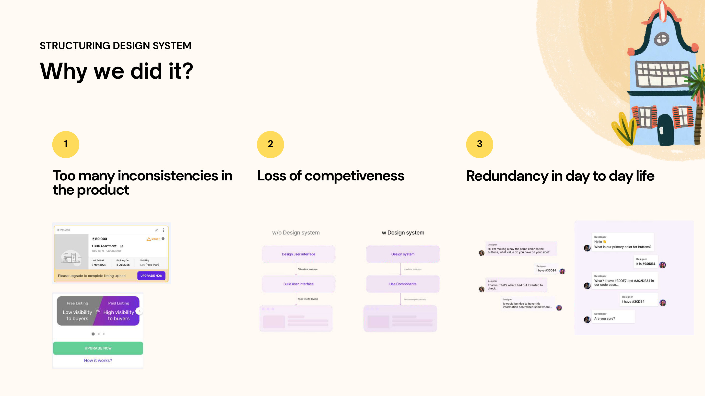
Audit practice · Discover
Mapping the current situation
Before defining a single token, the existing product was audited screen by screen — search filters, listing cards, payment history, subscription plans, owner tools — across mobile and web.
- Inventoried every live pattern across the product, not just the ones we remembered.
- Tagged each finding by frequency and risk, not just how ugly it looked.
- Flagged duplicate, contradictory, or off-brand components as we went.
- Turned the audit into the system's first roadmap, in priority order.
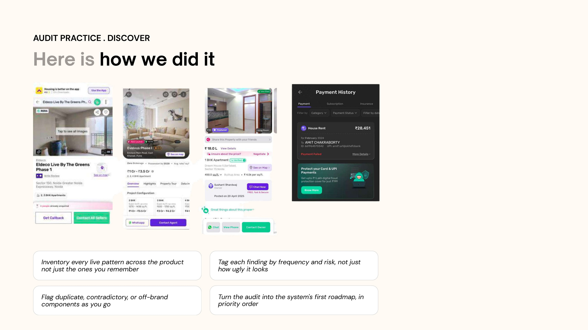
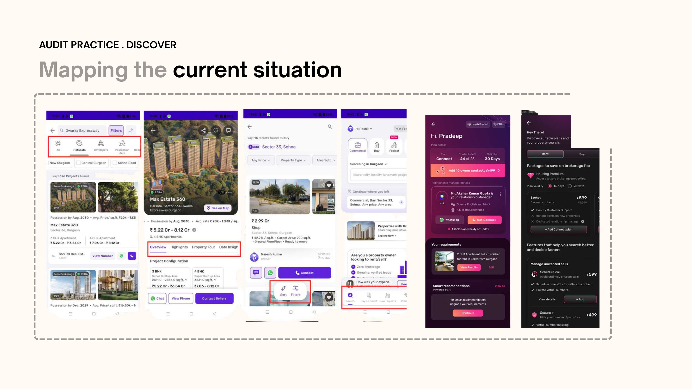
Structuring of design system · Foundation
Define tokens & variables
The foundation is a two-level token architecture built with Figma Variables: 100 raw color_primitives feed 63 semantic color_tokens, alongside dedicated spacing (15), radius (9) and typography (34) collections — 221 variables in total.
The Primary Purple palette (P-50 → P-900) was tuned for smoother chroma transitions — luxurious and modern without tipping into neon — paired with a Warm Neutral scale (N-0 → N-900) for surfaces and borders, plus Pistachio, Lavender, Butter and Grey accents for semantic states.
Every variable is scoped to the Figma properties it's meant for (fill, corner radius, gap) so a color like #3A11AD only ever shows up where it belongs, not on every text layer in the file.
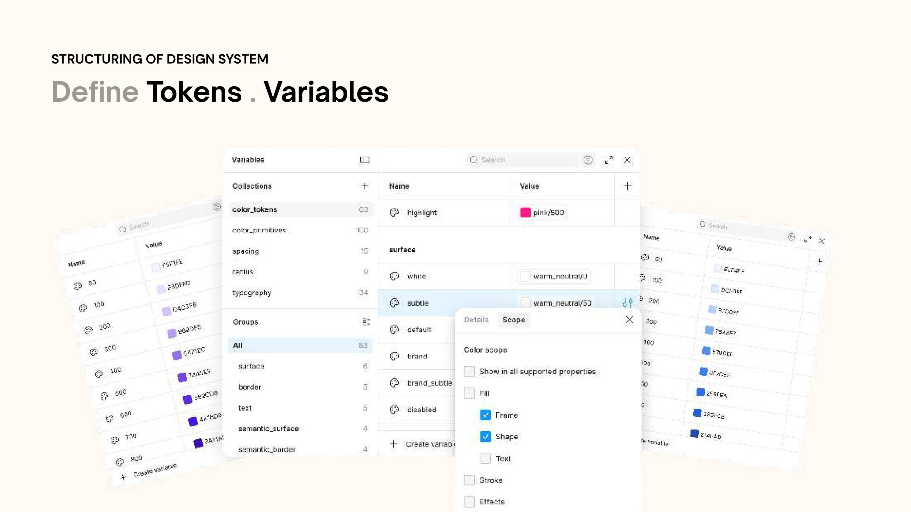
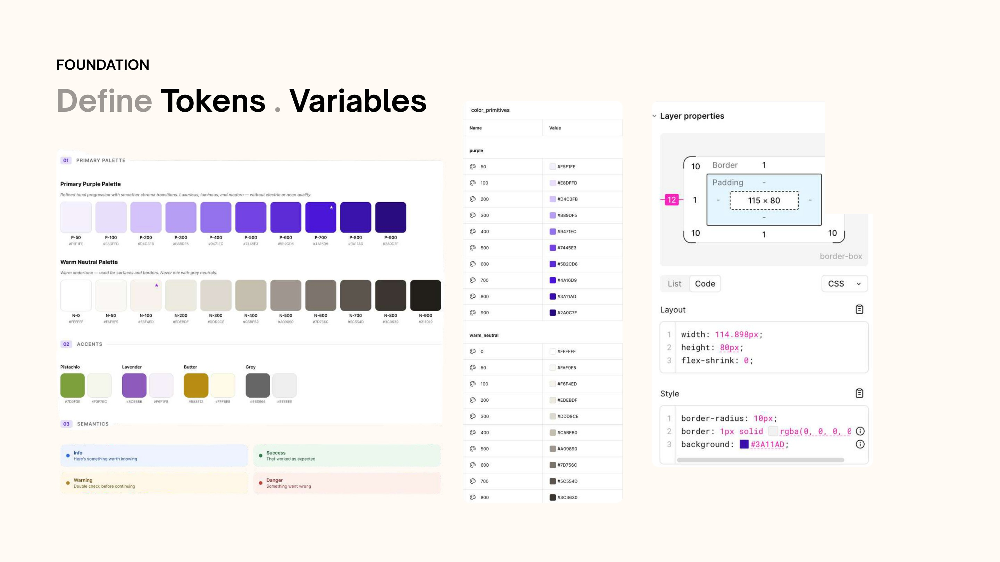
Foundation
Adding a semantic layer
Raw primitives don't tell anyone when to use them, so each state — Info, Success, Warning, Danger — got four semantic tokens: Surface, Border, Icon and Text, each pointing to a specific primitive step.
Every token also carries a documented role, e.g. Semantic Surface/info → Blue/50 → background for banners, tags and alert containers, so the choice between layers is never a guess. In code, that becomes background: var(--surface-white, #FFF) — a token name with a raw-value fallback baked right into the component.
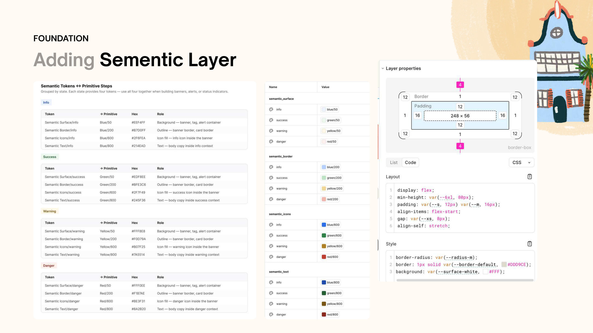
Foundation
Typography
One font family — Google Sans Flex — kept deliberately boring, in four weights (Regular, Medium, SemiBold, Bold), driving a full scale of Display, Heading (H1–H6), Body and Caption/Label styles: 34 typography variables in total.
Web and mobile sizes are tuned independently per style (Display Large runs 56/64 on web vs. 40/48 on mobile), while Caption and Label stay pixel-identical across devices so the smallest text in the product never surprises anyone.
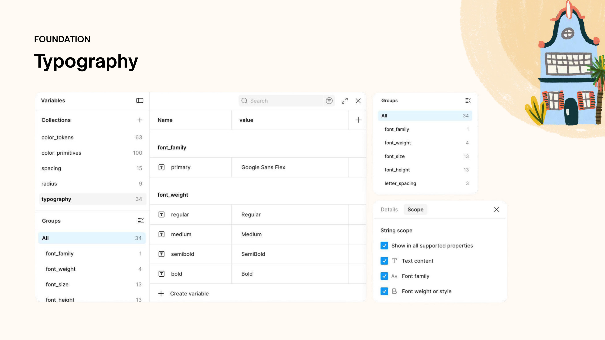
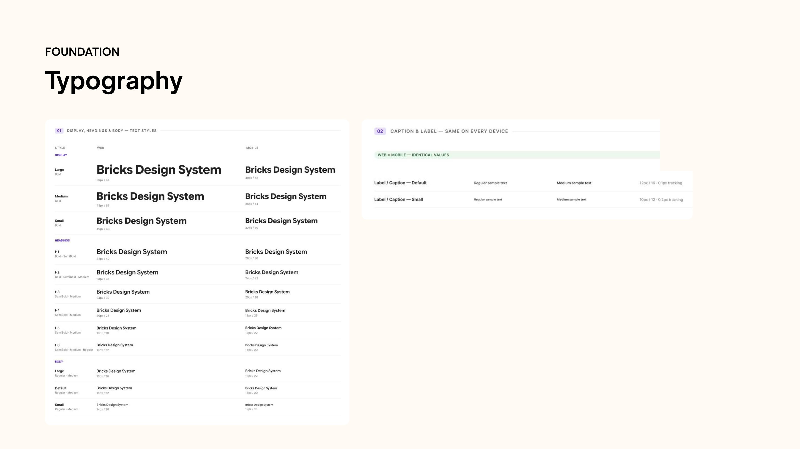
Foundation
Spacing & radius
Spacing runs 15 tokens deep, from none (0px) to 8xl (128px); radius runs 9, from none (0px) to full (999px) for pills and avatars. Both scales are scoped to the properties they're for — width/height and gap for spacing, corner radius only for radius — so a designer can't accidentally apply a spacing token where a radius token belongs.
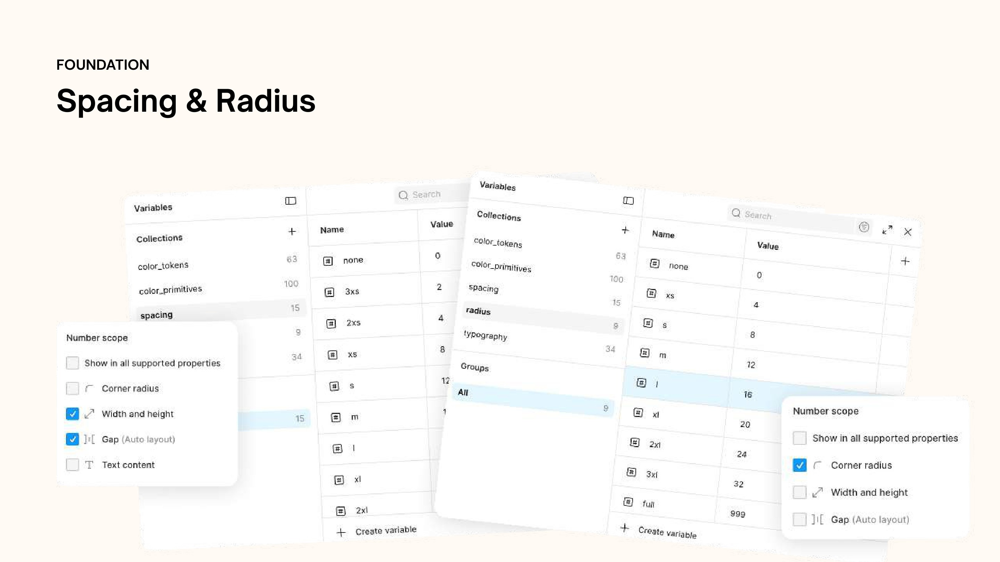
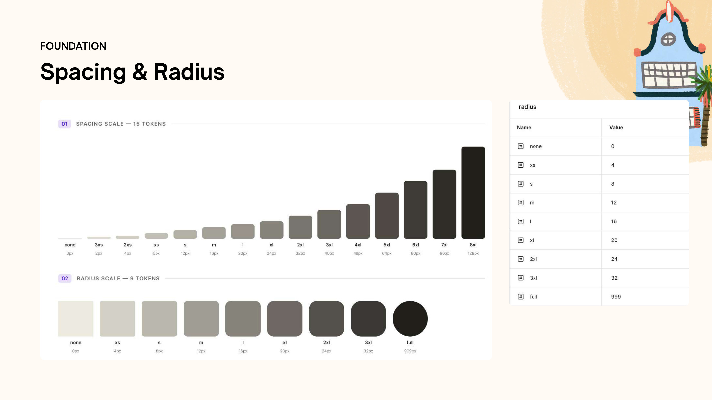
Foundation
Icons
System icons ship in matched outline / filled / disabled states — Heart, Arrow, X-circle, Delete, Lock, Warning, Crown — with consistent stroke weight so any icon can swap into any state without redrawing it.
A separate set of 3D icons (ATM, train, shop-house, dental chair, pool, meter box, CCTV, car, park bench, gym) covers marketing moments and empty states, matching the same illustrated, slightly whimsical tone as the rest of the system.
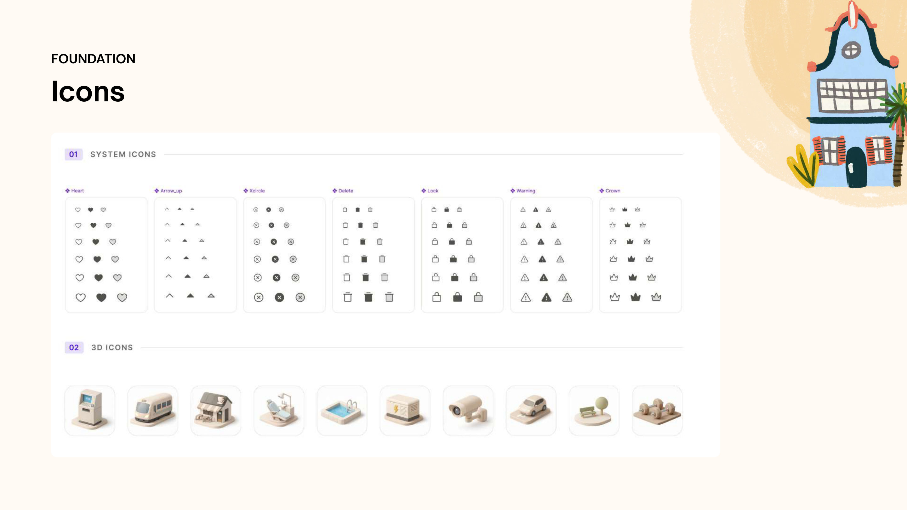
Foundation
Grids & patterns
Three layout structures cover the product: Centered (content boxed with margin either side), Full Width (content stretches, padding does the work) and Mixed (a main panel plus an aligned side panel). Columns, gutters, padding and container widths are all tokenized per breakpoint — 4 columns on mobile up to 12 on desktop.
Scroll-snap behaviour for card carousels was also documented per platform, comparing snap physics, momentum decay and peek-next-card support across mobile web, desktop web, iOS and Android — because native apps handle this far better than the browser does, and the system needed to say so explicitly.
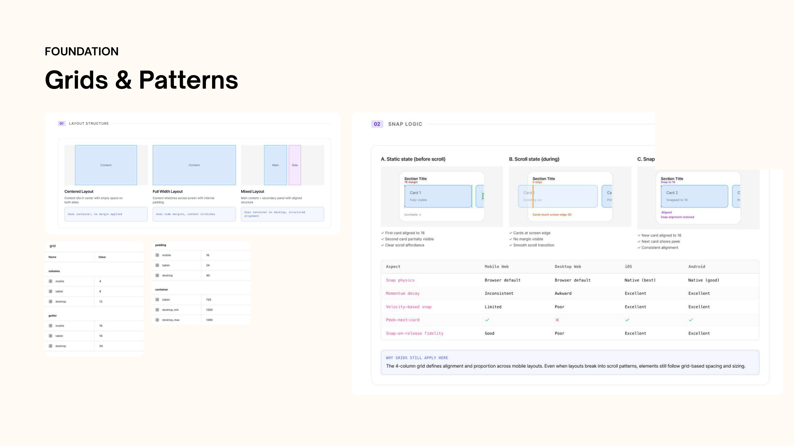
Structuring atoms · Components
Components: buttons
Every atom is built with explicit auto-layout rules rather than eyeballed pixels: the button hugs its label, padding comes from the xs/s spacing tokens, the icon gap from 2xs, and the corner from the s radius token.
Variant, size, state, label and icon slots are all exposed as component properties, so a designer swaps a variant from a dropdown instead of detaching and hacking the instance. The dev-facing code panel mirrors this exactly — padding: var(--xs, 8px) var(--s, 12px), background: var(--surface-brand, #4A16D9) — token name and fallback value together, ready to paste.
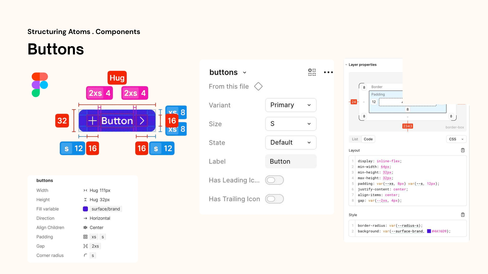
Bricks design system · Scaling with AI
Scaling component creation with AI
Instead of prompting AI from scratch for every component, the rules got written down once: a DESIGN.md guideline (~2,700 lines) encoding the design language, component principles, do's and don'ts, properties, states and expected behaviours — including what the AI should ask about when a prompt was incomplete, instead of guessing.
The team used that guideline alongside their prompts to generate first-draft components faster (branches like feat/accordion-molecule and feat/icon-button-docs), while every generated component still went through design review before joining the core system. The guideline also tracked real token usage — text-secondary referenced 472 times, background 250 — to prove adoption, not just intent.
The goal wasn't to automate design. It was to automate the repetitive decisions so designers could focus on the quality of the system.
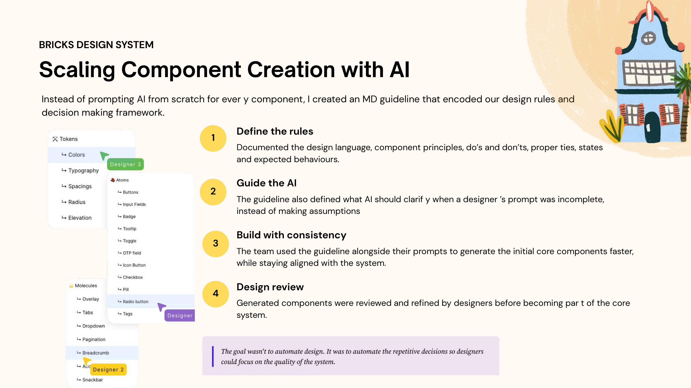
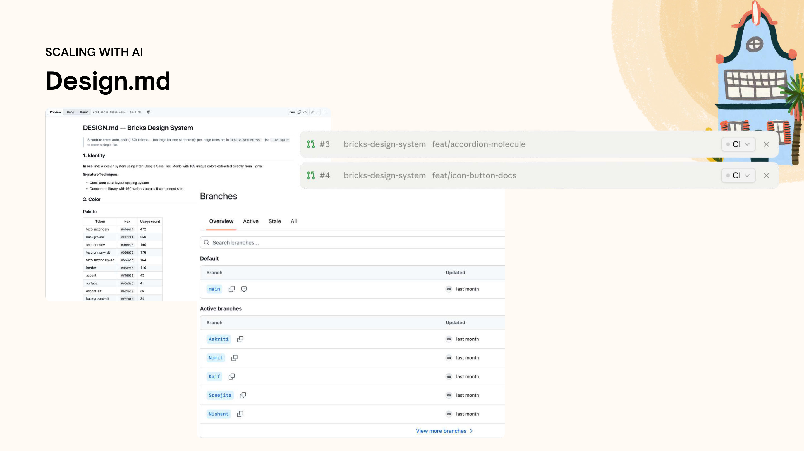
Handoff
Designer × developer
The handoff is a closed loop, not a one-way delivery. Designers establish foundations (color, type, spacing) → developers turn them into design tokens (JSON, CSS variables, style dictionary). Designers develop components with variables and states → developers produce component specs (redlines, annotations). Designers write usage guidelines and accessibility notes → developers turn them into documentation.
Developers write the code docs (Storybook, README, API docs), which feed back into the designers' visual QA and design review — and accessibility plus performance feedback closes the loop by refining tokens and components for the next iteration.
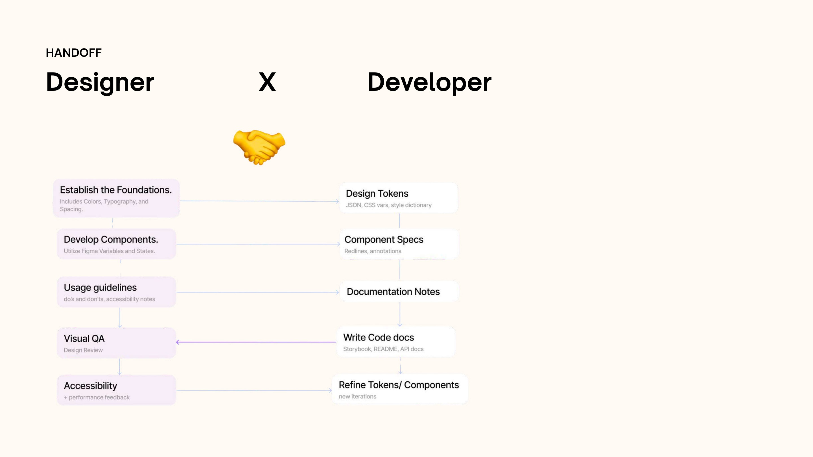
Owner kit
Pod design kit
On top of the core system sits a reusable kit of business-specific patterns — enquiry nudges, dynamic price nudges, enquiry and demand/supply widgets, and a full bank of promotional banners — built once so every product pod could assemble owner-facing screens consistently, instead of redesigning the same upgrade prompt from scratch each time.
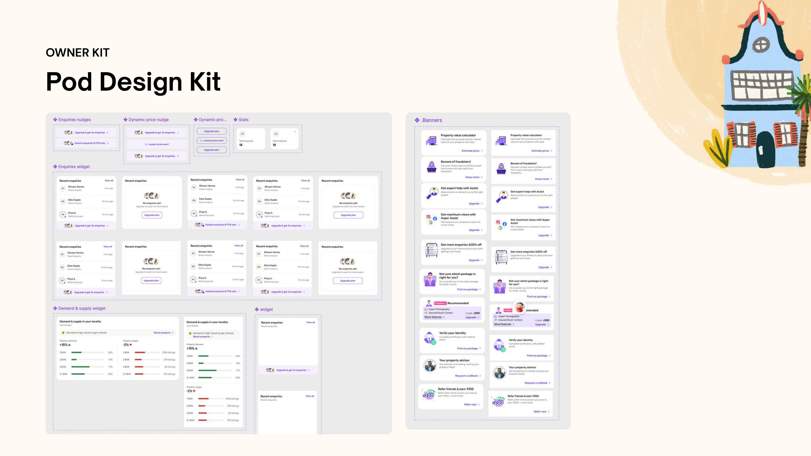
Design system
Business benefits
- Consistency. A shared foundation brought consistency across products, from typography and spacing to components and interaction patterns.
- Efficiency. The AI guideline gave designers a consistent starting point while keeping design decisions and review with the team.
- Scalability. Teams now have a shared foundation they can build on as new product needs emerge.
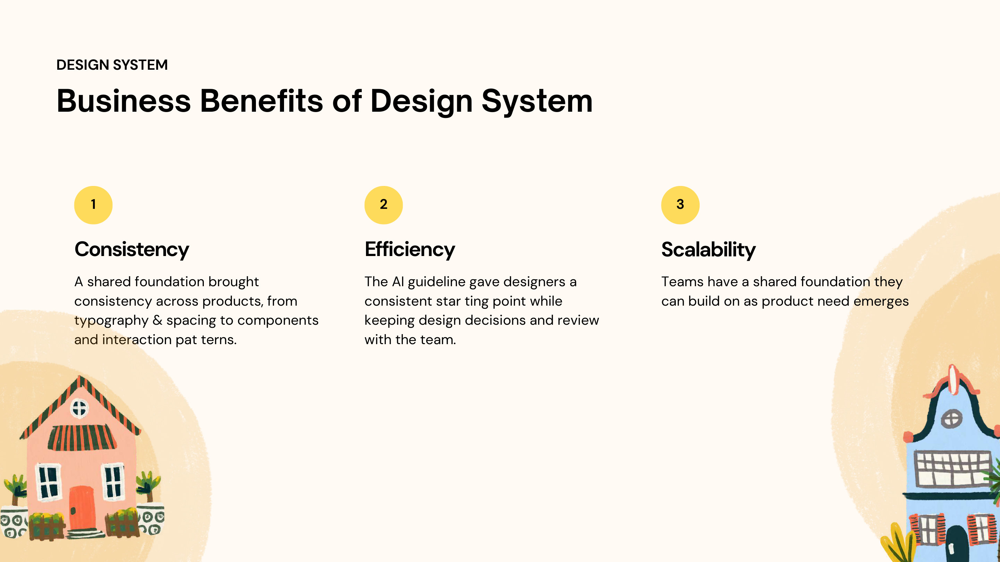
Design system
Impact on different teams
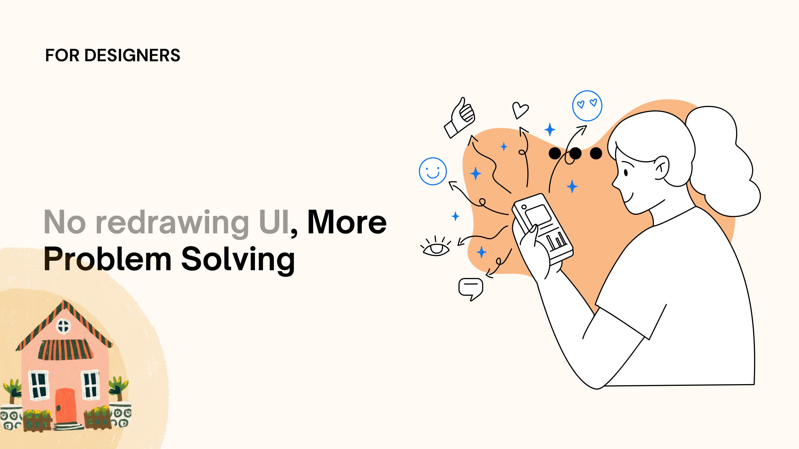
For designers
No redrawing UI, more problem solving.
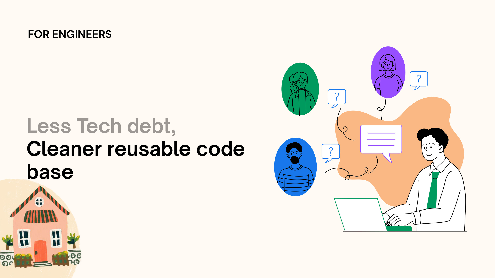
For engineers
Less tech debt, cleaner reusable code base.
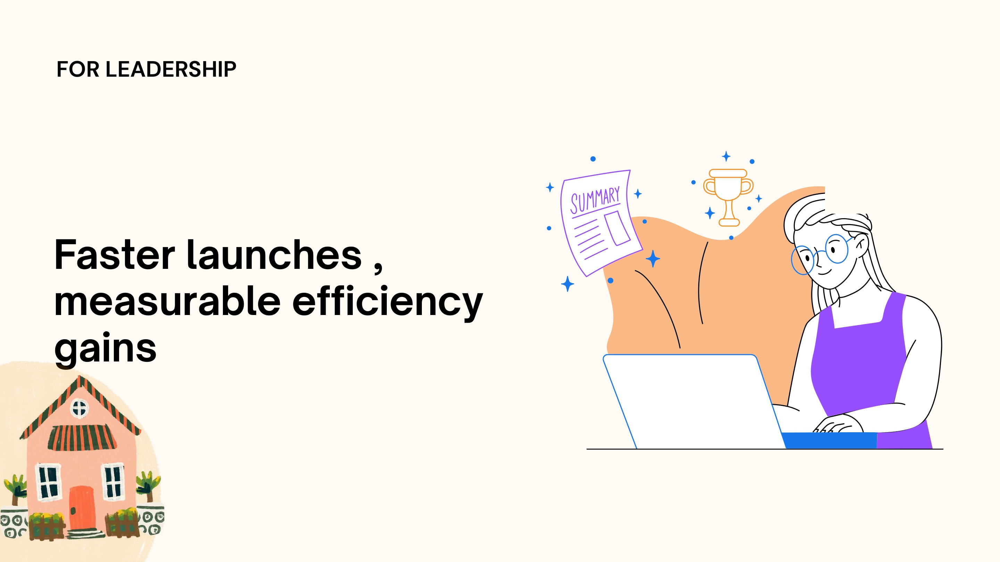
For leadership
Faster launches, measurable efficiency gains.
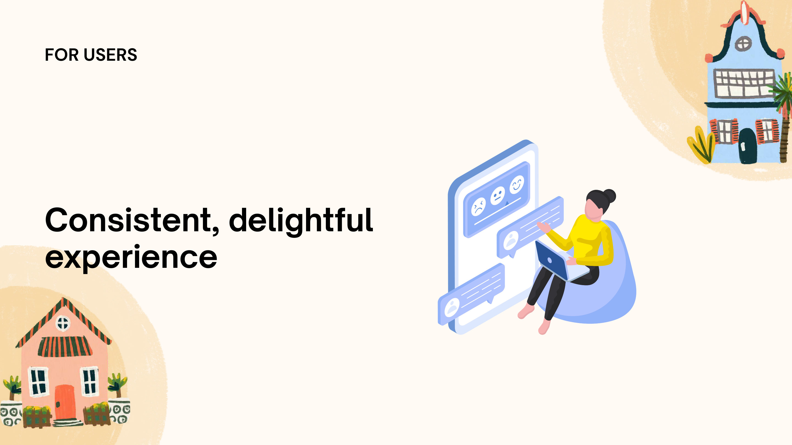
For users
Consistent, delightful experience.
Results
Expected ROI after DS implementation
- ~35%Cost saving
- ~40%Cost to market
- ~35%Design efficiency
- ~31%Dev efficiency